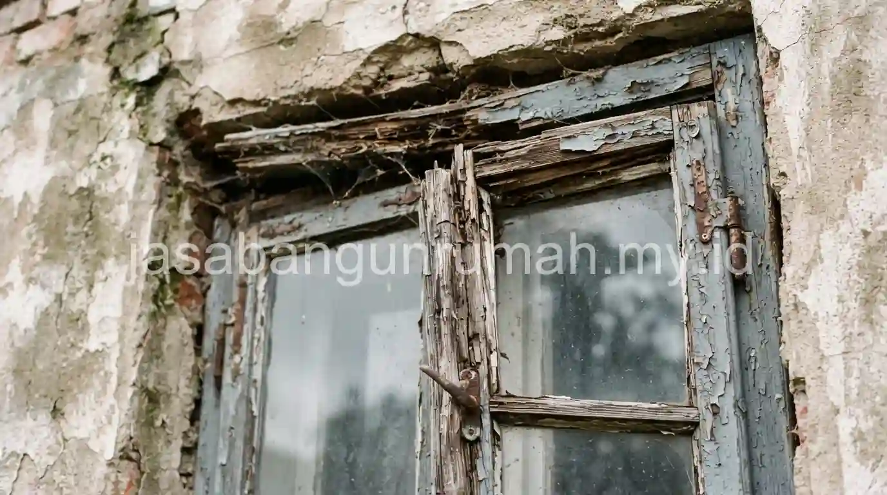

Daftar Isi
- Apa Perbedaan Biaya Awal antara Kusen Aluminium dan Kusen Kayu?
- Mengapa Kusen Kayu Lebih Rawan Melintir Dibanding Kusen Aluminium?
- Mana yang Lebih Hemat dari Sisi Perawatan Jangka Panjang?
- Faktor Apa yang Membuat Sebagian Orang Masih Memilih Kusen Kayu?
- Bagaimana Perbandingan Keduanya pada Rumah di Daerah Lembap atau Dekat Pantai?
- Bagaimana Perbandingan Dampak Lingkungan antara Kedua Material Ini?
- Bagaimana Menentukan Pilihan yang Tepat Sesuai Kebutuhan Rumah?
Kusen aluminium lebih tahan terhadap rayap dan tidak mudah melintir akibat perubahan cuaca dibandingkan kusen kayu oven, sedangkan kusen kayu masih diminati karena kehangatan visual alami yang sulit ditiru sepenuhnya oleh material aluminium.
Apa Perbedaan Biaya Awal antara Kusen Aluminium dan Kusen Kayu?
Harga awal kusen kayu oven dengan kualitas baik terkadang dapat bersaing atau bahkan lebih murah dibandingkan kusen aluminium untuk ukuran bukaan standar, tergantung jenis kayu yang digunakan dan tingkat kerumitan desain profil kusen yang diinginkan.
Kusen kayu kamper oven, misalnya, menjadi pilihan populer karena harganya yang relatif terjangkau dibandingkan kayu jati, namun tetap memiliki daya tahan yang cukup baik apabila melalui proses pengovenan yang tepat untuk mengurangi kadar air dalam kayu sebelum dibentuk menjadi kusen. Kusen aluminium di sisi lain memiliki harga yang lebih konsisten dan mudah diprediksi karena diproduksi secara pabrikasi dengan standar ukuran dan ketebalan yang seragam — simak daftar harga pasang kusen aluminium per meter untuk gambaran biaya yang lebih rinci.
Dari sisi biaya pemasangan, kusen kayu umumnya membutuhkan waktu pengerjaan lebih lama karena proses penyerutan, pembentukan profil, dan penyesuaian ukuran dilakukan secara manual oleh tukang kayu di lokasi atau di bengkel, sedangkan kusen aluminium yang sudah terpotong presisi dari pabrik dapat dipasang lebih cepat sehingga menghemat biaya upah tukang untuk proyek dengan banyak titik bukaan. Perbedaan ini juga berdampak pada total biaya bangun rumah per meter persegi yang perlu Anda anggarkan.
Mengapa Kusen Kayu Lebih Rawan Melintir Dibanding Kusen Aluminium?
Kusen kayu, meski sudah melalui proses oven untuk mengurangi kadar air, tetap memiliki sifat alami menyerap dan melepaskan kelembapan dari udara sekitar, sehingga perubahan cuaca ekstrem antara musim kering dan musim hujan dapat menyebabkan kayu mengembang dan menyusut secara bergantian.
Pergerakan dimensi akibat perubahan kelembapan ini, apabila terjadi secara tidak merata pada satu batang kayu, dapat menyebabkan kusen melintir atau berubah bentuk dari posisi awalnya, sehingga pintu atau jendela menjadi sulit dibuka dan ditutup dengan lancar setelah beberapa waktu pemakaian. Kusen aluminium tidak mengalami masalah serupa karena material logam ini tidak menyerap kelembapan udara sebagaimana sifat alami kayu, sehingga dimensi kusen aluminium cenderung tetap stabil meski terpasang pada daerah dengan fluktuasi cuaca yang cukup ekstrem sepanjang tahun.
Selain isu melintir akibat kelembapan, kusen kayu juga memiliki risiko serangan rayap yang dapat merusak struktur bagian dalam kusen secara perlahan tanpa selalu terlihat jelas dari permukaan luar, terutama apabila proses pengovenan kayu sebelumnya kurang maksimal dalam membunuh telur atau larva rayap yang mungkin masih tertinggal di dalam serat kayu. Kusen aluminium sepenuhnya terbebas dari risiko ini karena material logam tidak menjadi sumber makanan bagi rayap maupun serangga perusak kayu lainnya — kondisi ini juga relevan saat mempertimbangkan baja ringan vs kayu untuk rangka atap dengan alasan serupa.

Mana yang Lebih Hemat dari Sisi Perawatan Jangka Panjang?
Kusen aluminium umumnya lebih hemat dari sisi perawatan jangka panjang karena tidak membutuhkan pengecatan ulang berkala seperti kusen kayu, serta tidak memerlukan perlakuan khusus seperti pelapisan anti rayap yang biasanya perlu diulang setiap beberapa tahun pada kusen kayu.
Kusen kayu membutuhkan perawatan rutin berupa pengecatan ulang atau pelapisan vernis untuk melindungi permukaan dari paparan sinar matahari dan kelembapan, karena lapisan pelindung ini akan terkikis seiring waktu dan apabila dibiarkan tanpa perawatan dapat mempercepat proses pelapukan kayu di bagian yang terpapar cuaca secara langsung. Biaya perawatan ini perlu diperhitungkan sebagai biaya tambahan dalam jangka panjang — pelajari lebih lanjut cara renovasi rumah hemat biaya agar anggaran perawatan tetap terkendali.
Di sisi lain, kusen aluminium hanya membutuhkan pembersihan rutin menggunakan kain lembap untuk menjaga tampilannya tetap bersih, tanpa perlu penambahan lapisan pelindung baru secara berkala. Meski demikian, kusen aluminium dengan finishing tertentu seperti powder coating tetap perlu dihindarkan dari bahan pembersih abrasif yang dapat mengikis lapisan catnya secara perlahan, meski risiko ini jauh lebih kecil dibandingkan risiko pelapukan pada kusen kayu yang tidak terawat.
Faktor Apa yang Membuat Sebagian Orang Masih Memilih Kusen Kayu?
Meski kusen aluminium memiliki keunggulan dari sisi ketahanan dan perawatan, sebagian pemilik rumah tetap memilih kusen kayu karena kehangatan visual alami yang dihasilkan tekstur serat kayu, terutama untuk rumah dengan konsep desain klasik, tradisional, atau rumah kayu yang mengutamakan nuansa alami secara keseluruhan. Untuk inspirasi konsep yang memadukan material alami dan modern, simak artikel inspirasi desain arsitektur modern minimalis.
Karakter kayu yang dapat diukir atau dibentuk dengan detail tertentu juga menjadi pertimbangan bagi pemilik rumah yang menginginkan ornamen khusus pada kusen, yang secara teknis lebih sulit direalisasikan pada material aluminium yang bentuknya lebih terbatas pada profil-profil standar pabrikan. Pemilihan antara kedua material ini pada akhirnya kembali pada prioritas masing-masing pemilik rumah, apakah lebih mengutamakan ketahanan dan minim perawatan jangka panjang seperti aluminium, atau nilai estetika alami dan fleksibilitas bentuk seperti yang ditawarkan kusen kayu.
Bagaimana Perbandingan Keduanya pada Rumah di Daerah Lembap atau Dekat Pantai?
Rumah yang berada di daerah dengan kelembapan tinggi atau berdekatan dengan kawasan pantai umumnya lebih diuntungkan menggunakan kusen aluminium, karena material ini tidak terpengaruh oleh kadar garam udara dan kelembapan ekstrem yang justru dapat mempercepat pelapukan kayu maupun memicu serangan rayap yang lebih agresif di lingkungan semacam ini.
Kayu yang terpasang di daerah pesisir cenderung lebih cepat mengalami perubahan warna, retak permukaan, atau bahkan pembusukan pada bagian dalam kusen apabila lapisan pelindungnya tidak dirawat secara rutin, mengingat kombinasi kelembapan tinggi dan paparan udara bergaram menjadi kondisi yang kurang ideal bagi daya tahan material organik seperti kayu. Aluminium dengan finishing yang tepat, baik anodized maupun powder coating berkualitas baik, umumnya lebih mampu menghadapi kondisi lingkungan semacam ini tanpa mengalami penurunan performa yang signifikan dalam jangka panjang.
Meski demikian, aluminium dengan kualitas finishing rendah tetap berisiko mengalami korosi ringan apabila terus-menerus terpapar udara bergaram tanpa perawatan sama sekali, sehingga pemilihan kualitas finishing yang tepat tetap menjadi faktor penting meski material dasarnya sudah lebih tahan dibandingkan kayu pada kondisi lingkungan yang menantang seperti ini.
Bagaimana Perbandingan Dampak Lingkungan antara Kedua Material Ini?
Dari sisi dampak lingkungan, kusen kayu yang bersumber dari hutan yang dikelola secara berkelanjutan dapat dianggap sebagai material yang lebih ramah lingkungan dibandingkan aluminium yang proses produksinya membutuhkan energi cukup besar, meski di sisi lain aluminium memiliki keunggulan dapat didaur ulang secara berulang tanpa kehilangan kualitas material secara signifikan.
Pemilihan material yang mempertimbangkan aspek keberlanjutan ini sebaiknya juga memperhatikan sumber kayu yang digunakan, karena kayu yang berasal dari penebangan tidak terkendali tentu memberikan dampak lingkungan yang berbeda dibandingkan kayu dari perkebunan yang dikelola dengan sertifikasi kelestarian hutan. Pertimbangan ini biasanya menjadi faktor tambahan bagi pemilik rumah yang memang secara khusus memperhatikan aspek keberlanjutan dalam setiap pemilihan material bangunan, di luar pertimbangan biaya dan ketahanan teknis semata.
Bagaimana Menentukan Pilihan yang Tepat Sesuai Kebutuhan Rumah?
Penentuan pilihan antara kusen aluminium dan kusen kayu sebaiknya mempertimbangkan beberapa faktor sekaligus, yaitu kondisi iklim dan lingkungan sekitar rumah, konsep desain yang ingin dicapai, anggaran yang tersedia baik untuk biaya awal maupun perawatan jangka panjang, serta preferensi pribadi terhadap tampilan material. Konsultasikan kebutuhan ini bersama jasa arsitek kami agar pilihan material selaras dengan desain rumah secara keseluruhan.
Rumah dengan konsep modern minimalis yang mengutamakan kepraktisan dan minim perawatan umumnya lebih cocok menggunakan kusen aluminium, sedangkan rumah dengan konsep tradisional, klasik, atau rumah kayu yang mengandalkan kehangatan visual alami cenderung lebih selaras menggunakan kusen kayu meski membutuhkan komitmen perawatan yang lebih rutin. Tidak sedikit pula pemilik rumah yang mengombinasikan kedua material ini dalam satu bangunan, misalnya menggunakan kusen aluminium untuk area yang sering terpapar cuaca ekstrem di bagian luar, sementara kusen kayu tetap dipertahankan untuk elemen interior yang ingin menonjolkan kehangatan visual tertentu.
Bagi pemilik rumah yang masih mempertimbangkan pilihan antara kedua material ini sesuai kebutuhan dan kondisi lingkungan rumah, dapat menghubungi jasa kontraktor rumah kami untuk berkonsultasi mengenai material kusen yang paling sesuai.